04 / A SOFT UTOPIA
PLEASE
LIE
HERE
Installation / Material Study / Virtual ExhibitionA PLACE TO REST ↓
01 / SYMBOL INTO FORM
一个入口。
一双托住你的手。
一片幸运。
管道成为通往另一处空间的入口，手套转化为承托的双手，四叶草带来对幸运与自然的想象。三个熟悉的符号，组合成一个可以寄托休憩愿望的形态。
PIPE↓ ENTRANCE / 入口
GLOVE↓ HOLDING / 承托
CLOVER↓ LUCK / 幸运
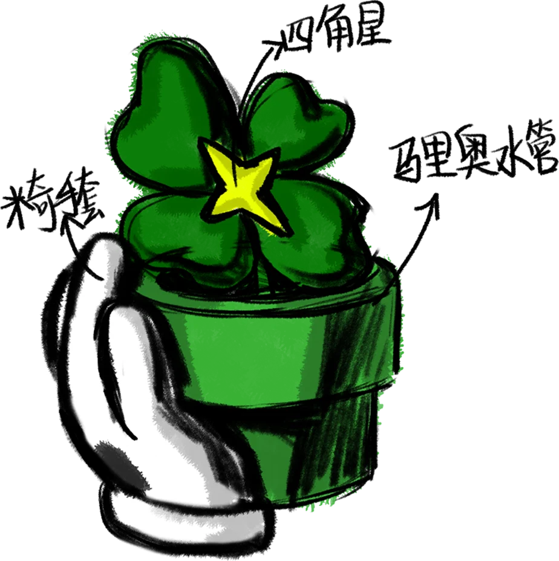
02 / FORM DEVELOPMENT
让想象，
慢慢站起来。
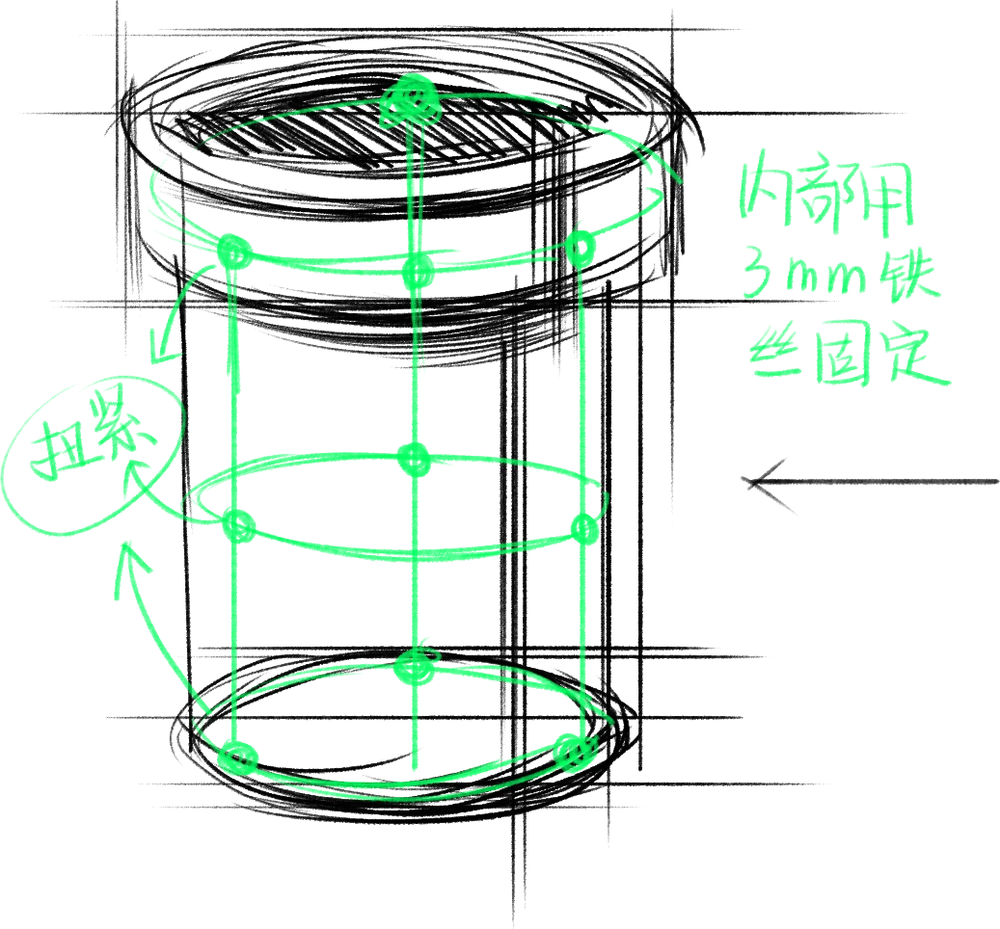
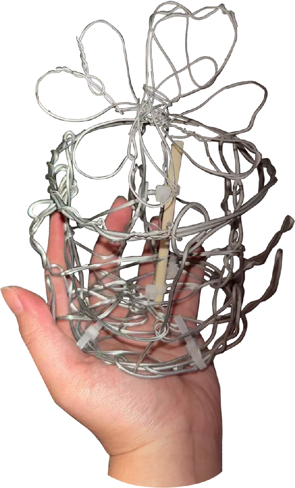
03 / MADE BY HAND
弯折、包覆、塑形。
留下手的痕迹。
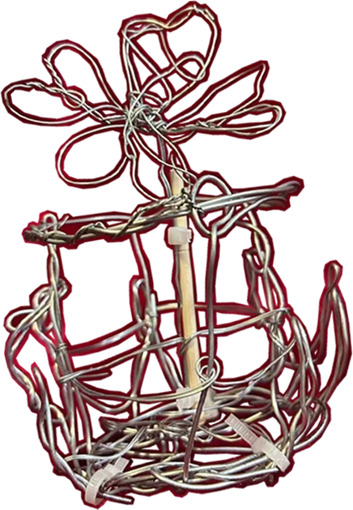
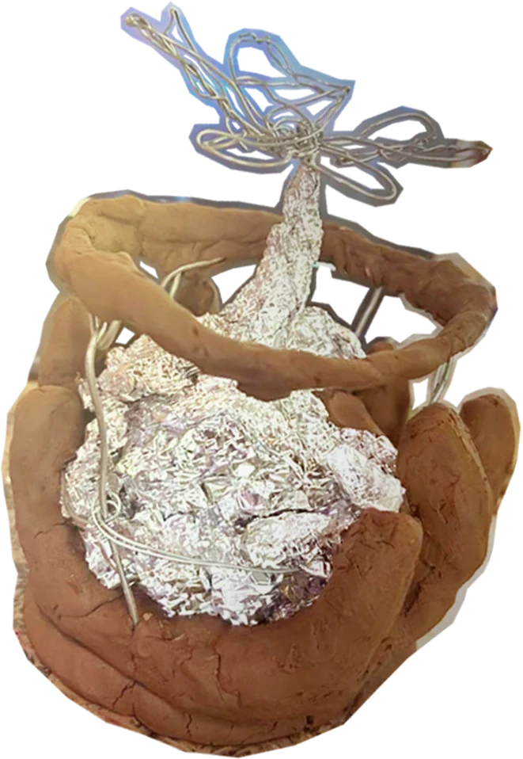
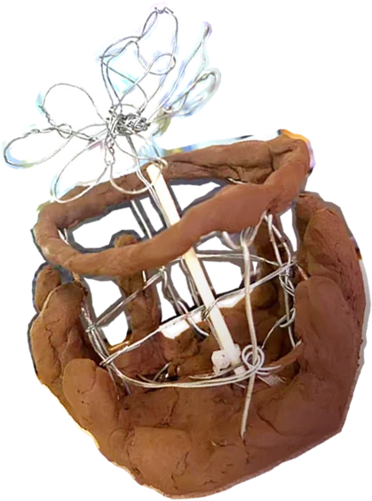
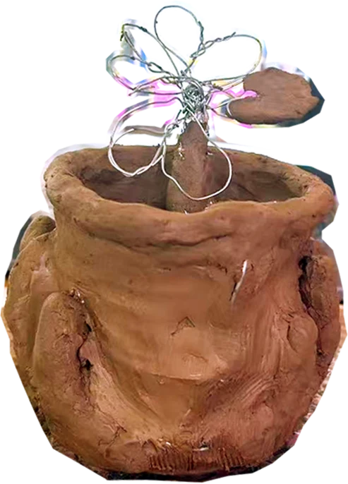
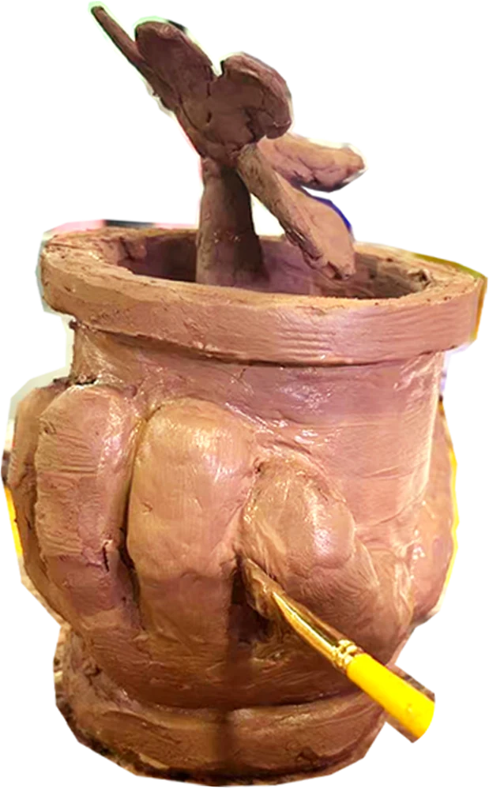
04 / THE PHYSICAL OBJECT
被托住的一点自然。
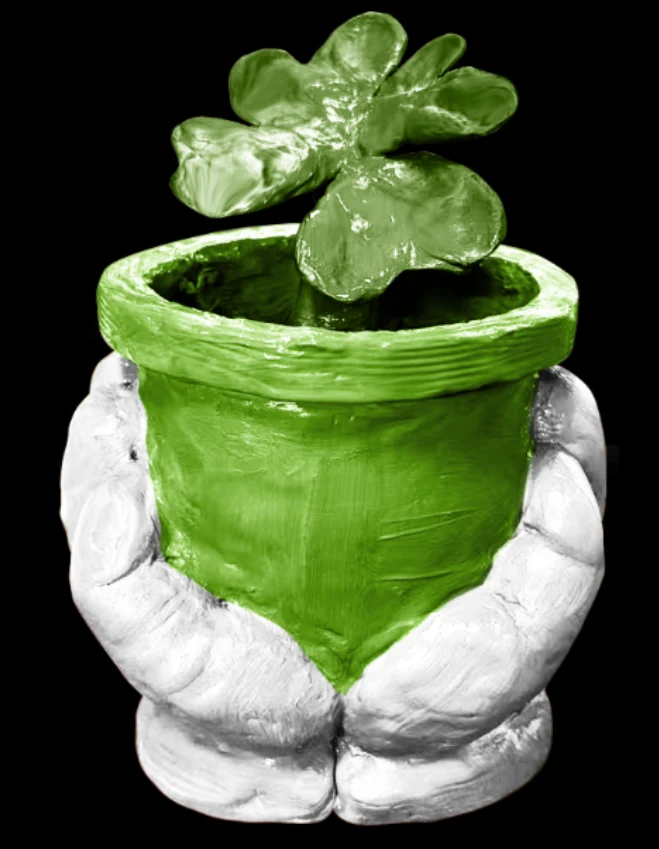
05 / MATERIAL STUDY
同一个形态，
不同的触感想象。
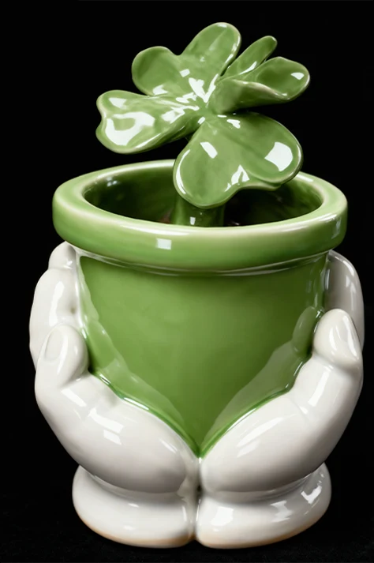
CERAMIC
AI 辅助材质研究 / Material visualization
保留形态，让光泽、纹理与柔软程度发生变化。
已选定 / SELECTED
06 / VIRTUAL EXHIBITION
从手中的物体，
到想象中的栖所。
以下为虚拟展览与空间概念效果图。绿色绒毛、植物与尺度的改变，让作品成为一处柔软的庇护所。
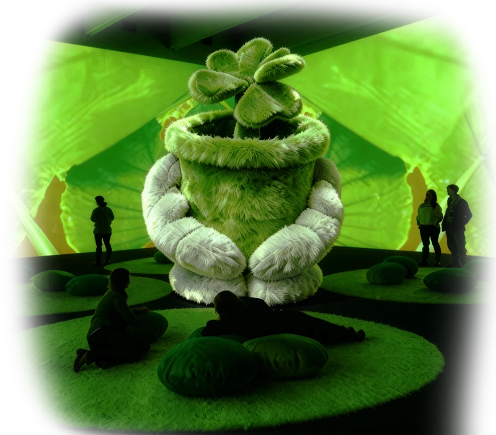
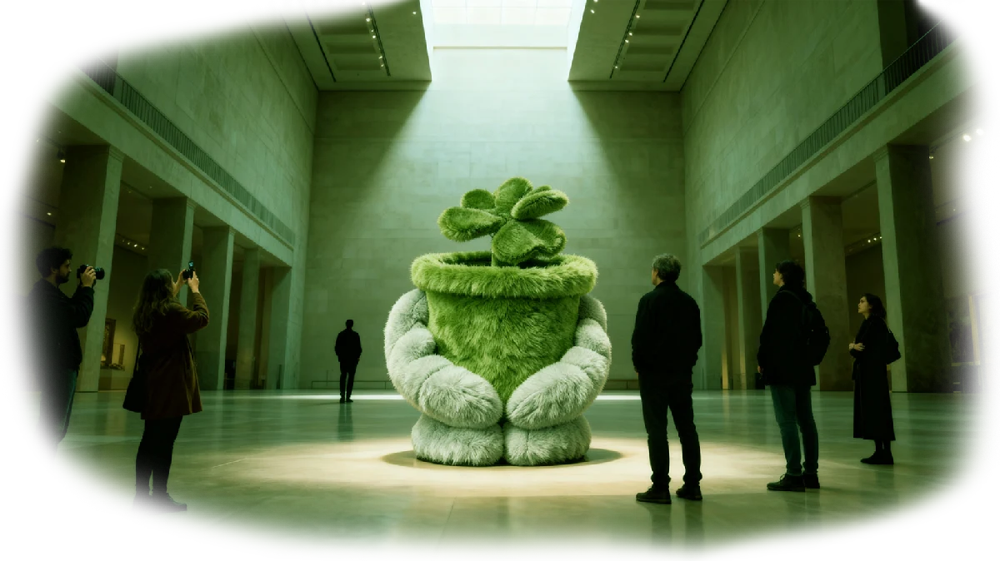
PLEASE LIE HERE
Please lie down within it,
and in the embrace of nature,
reclaim your inner freedom
and tranquility.
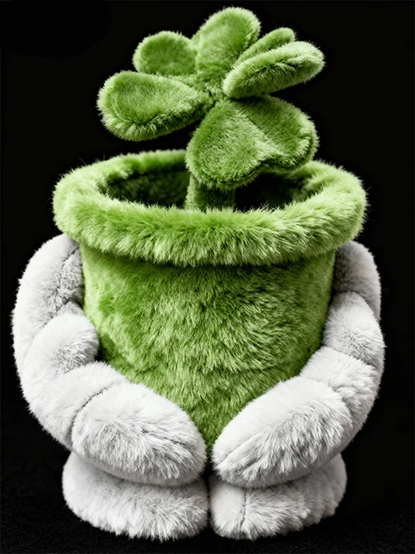